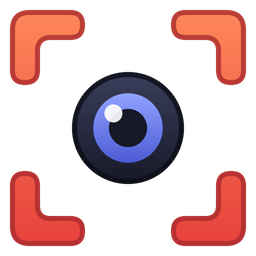
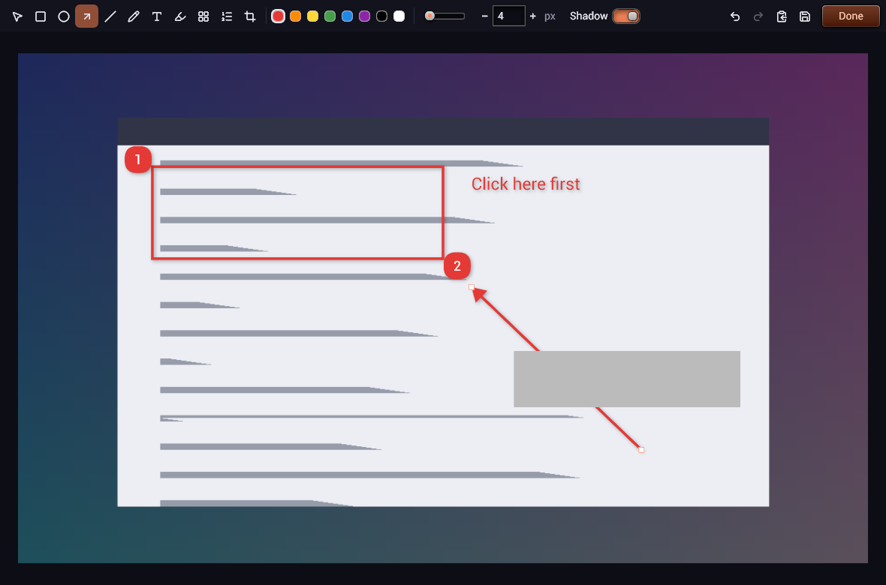
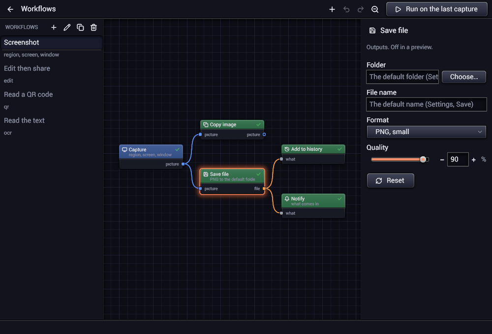
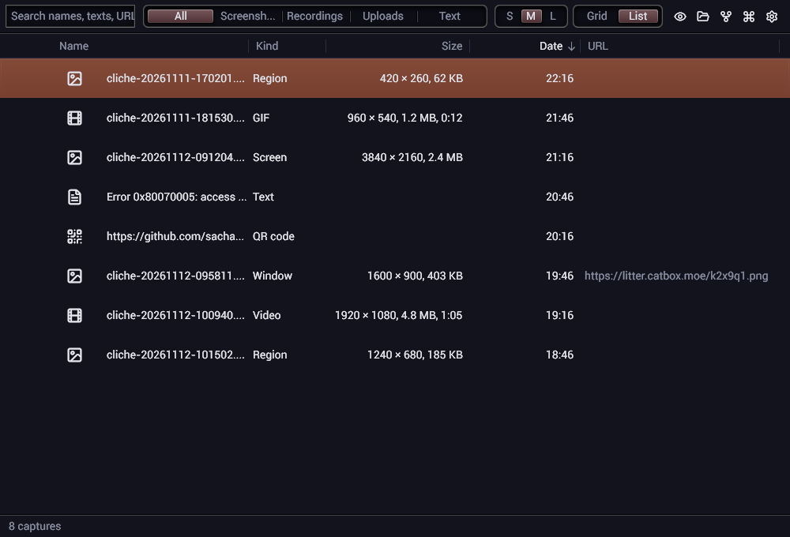
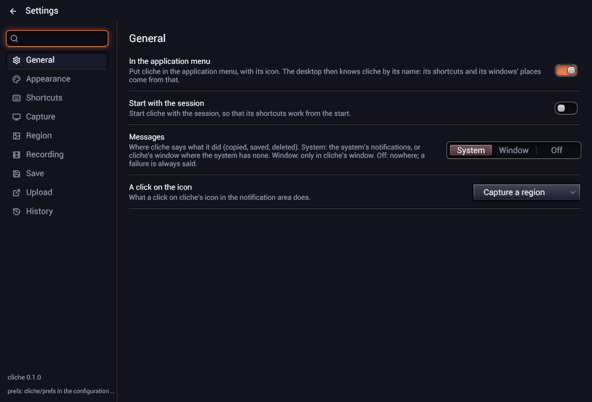

One key, one picture
A region drawn on the frozen screen, with the window under the pointer framed for you; the screen under the pointer; or the window in front. The picture is ready before the key is up.

clicheFast screenshots and screen recordings, shared at once.
· With Nix: nix run git+https://github.com/sachahjkl/cliche · MIT

A region drawn on the frozen screen, with the window under the pointer framed for you; the screen under the pointer; or the window in front. The picture is ready before the key is up.
What happens after a capture is a graph you edit: steps linked one to the next, with branches and conditions. Each capture's shortcut runs the workflow you choose.
Resize, crop, rotate, pad, a border, rounded corners, a shadow, a background, a watermark, a blur or a mosaic, grayscale, brightness, saturation, hue.
Copy it, save it as PNG, JPEG or WebP, upload it to a built-in host or to any ShareX uploader (.sxcu) and get its address on the clipboard.
Read a QR code in a region, or its text, and copy what was read. The text is read by Tesseract on Linux and by the system on Windows.
A region as an MP4 video or a GIF. A frame shows around it and a bar under it; nothing is recorded until you press Record. The same key stops it.
Every capture kept, as a grid or a list of thumbnails, searched by name, text or address. Copy it again, open it in the editor, upload it, show it in its folder.
What cliche did, copied, saved or uploaded, comes as a notification of the system, not as a window over your work.
A native program drawn on the GPU by its own toolkit, with no web view. It waits in the notification area; the capture, the encoding and the uploads never hold its windows.
Print Screen the screen under the pointer, Ctrl+Print Screen a region,
Alt+Print Screen the window in front.
Shift+Print Screen a video, Ctrl+Shift+Print Screen a GIF. Press the same keys again
to start, then to stop.
Ctrl+Alt+T the text in a region, Ctrl+Alt+Q a QR code. Change any key in the
settings.



One program for Linux x64: unpack it and start it. Needs a Wayland desktop (KDE, GNOME, Hyprland, ShojiWM), Vulkan and fontconfig; VA-API or OpenH264 to record a video, Tesseract to read text.
cliche-{{version}}-linux-x64.tar.gz
One program for Windows 10 and 11, x64: unpack it and start it. It waits in the notification area.
cliche-{{version}}-windows-x64.zip
The flake builds cliche from source with everything it needs. Add packages.x86_64-linux.default
to your configuration, or install it.
nix profile add git+https://github.com/sachahjkl/cliche
On Linux, in the flake's shell (nix develop), one command builds build/cliche; on
Windows, build.bat release with Odin, Git and Cargo on the path.
git clone --recursive https://github.com/sachahjkl/cliche && cd cliche && ./build.sh release